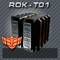
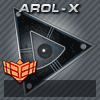
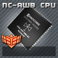
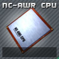
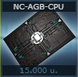

Hasznos CPU-k:
-
Rakétaturbó (RDK-T01)

Megduplázza a rakéták kilövési sebességét. -
Automata rakéta CPU (AROL-X)

Lézertámadás közben a kiválasztott rakétatípust automatikusan a lehető leggyorsabban lövi ki folyamatosan. Az AROL-X-CPU-t beépítés után a csillagtérképen a „CPU-k” menüpontban lehet aktiválni. -
Labor CPU (nc-awr-CPU)

A lézert és a rakétákat az űrhajó rakterében tárolt nyersanyaggal tölti fel. -
Labor CPU 2 (nc-awr2-CPU )

Csak a rakétákat tölti fel az űrhajó rakterében tárolt nyersanyaggal. -
Rakéta CPU (RB-CPU)

Automatikusan megvásárol 500 rakétát, ha 100-nál kevesebb van a fedélzeten. -
Generátor gyorsító CPU (NC-ACB-CPU)

Automatikusan fejleszti a generátorokat a laborban található nyersanyaggal.